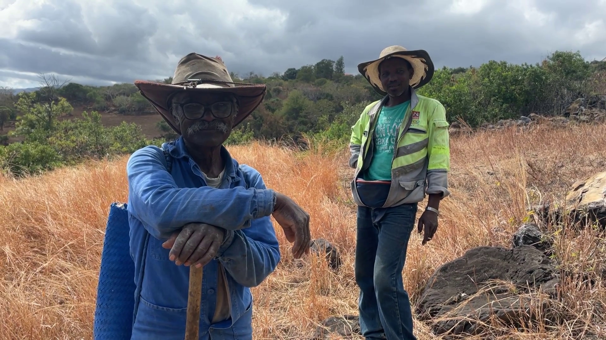
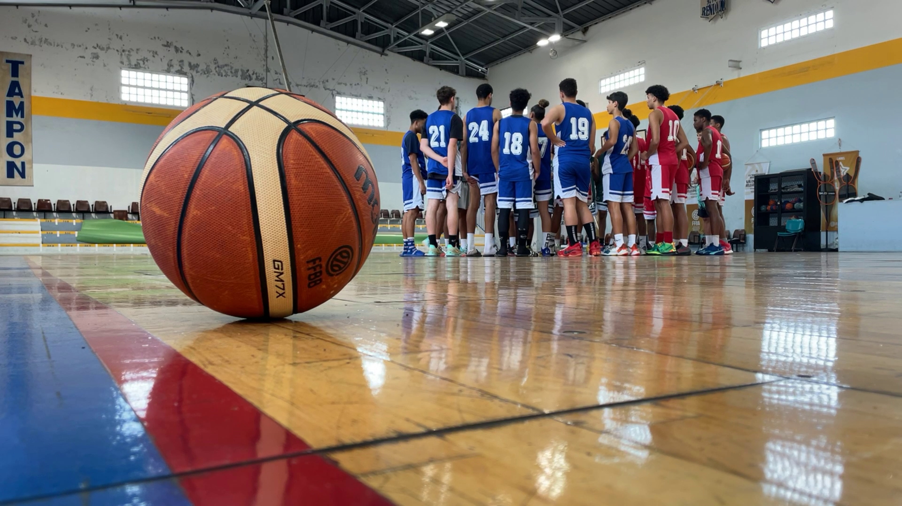
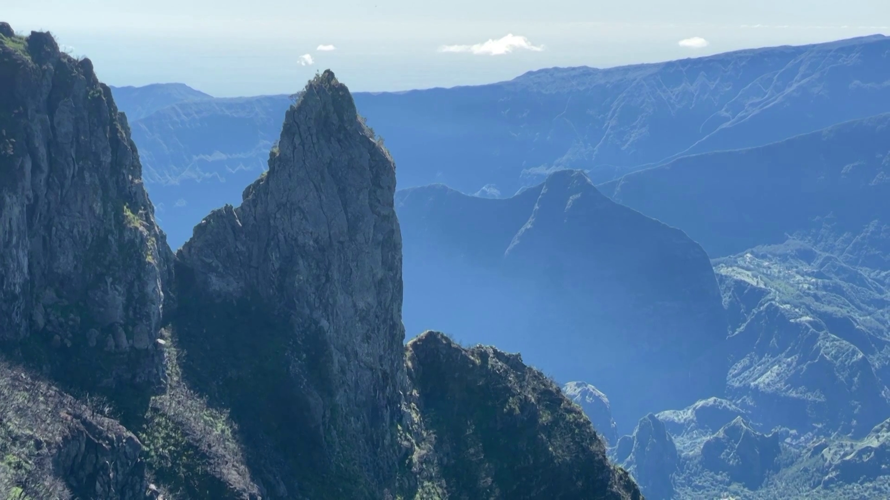
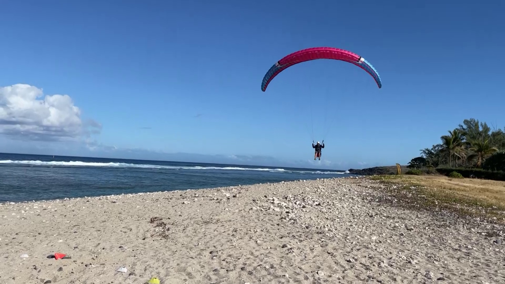
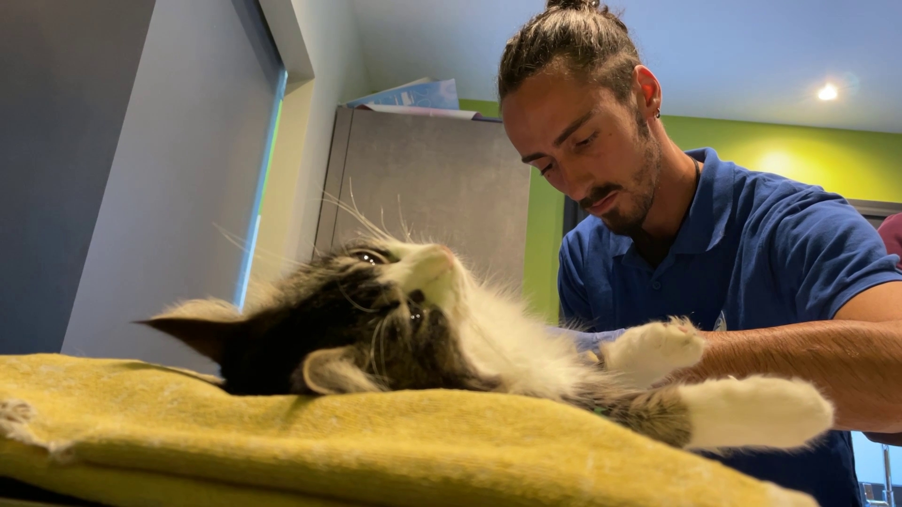
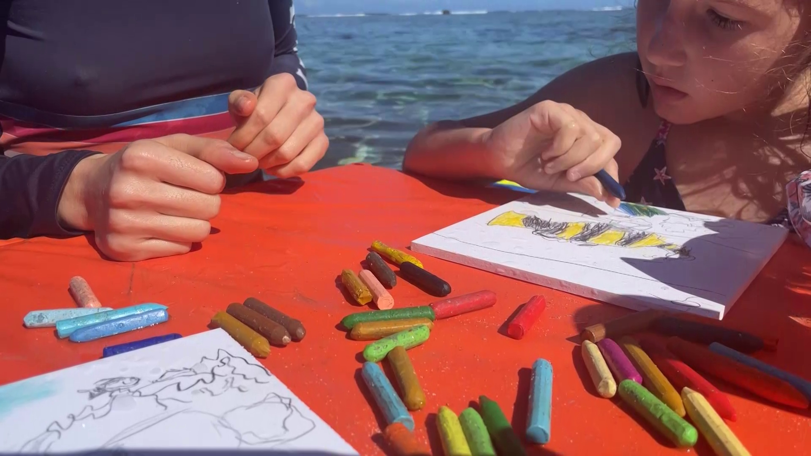
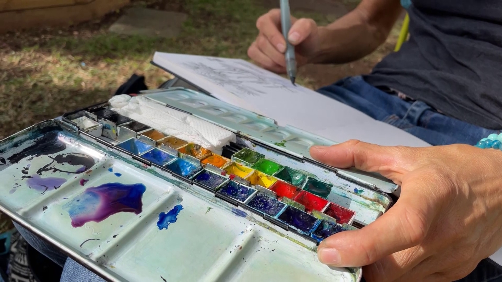

Reportages
Au cours de ma carrière, j'ai pu réaliser différents reportages.
En voici une sélection réalisés
pour Antenne Réunion.
Une sortie en mer pour identifier un maximum de baleines sur les côtes
Réunionnaises.

Immersion dans le quotidien d'un éleveur de boeufs Moka, celui de Raymond. Le seul éleveur bio de l'ile de la Réunion.

Un camp d'entrainement de Basket orchestré par un coach d'université
Americaine. Une aubaine pour ces jeunes réunionnais, qui rêvent de NBA.

Entre sensations fortes, découverte du géranium et randonnées, il y a de
quoi faire dans les hauts à la Réunion.

Pour les passionnés de parapente une nouvelle discipline prend son envol, la précision d'atterissage. Immersion lors d'une compétition à Saint-Leu.

Pour faire face à la population d'animaux errants, une campagne de
stérilisation gratuite est lancée à la Réunion.

Avis aux amateurs de poissons: dessiner sous l'eau, c'est désormais
possible. Une toute nouvelle activité créative sur la plage de l'hermitage.

Entre deux coups de crayons, ces randonneurs à bicyclette parcourent les
paysages en quête d'inspiration.

Entre deux noix de coco, les Taphien de Maurice se reposent le jour après
une nuit de chasse. Combien peuplent l'étang St-Paul ?